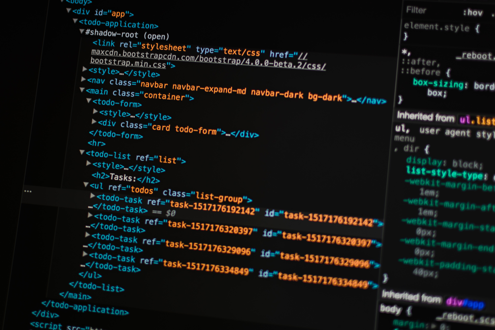

Java

Java sebagai salah satu bahasa pemrograman yang sudah berumur dari era 1990-an,
kian berkembang dan melebarkan dominasinya di berbagai bidang. Salah satu penggunaan
terbesar Java adalah dalam pembuatan aplikasi native untuk Android. Selain itu Java pun
menjadi pondasi bagi berbagai bahasa pemrograman seperti Kotlin, Scala, Clojure, Groovy,
JRuby, Jython, dan lainnya yang memanfaatkan Java Virtual Machine sebagai rumahnya.
Java pun akrab dengan dunia saintifik dan akademik. Cukup banyak akademisi di Indonesia
yang menggunakan Java sebagai alat bantu untuk menyelesaikan skripsi atau tugas akhir
dengan berbagai topik yang didominasi kecerdasan buatan, data mining, enterprise
architecture, aplikasi mobile, dan lainnya. Di dunia web development sendiri,
Java memiliki berbagai web framework unggulan seperti Spring, Play Framework, Spark,
Jakarta Struts, dan Java Server Pages.
Kotlin
Kotlin adalah sebuah bahasa pemrograman dengan pengetikan statis yang berjalan pada
Mesin Virtual Java ataupun menggunakan kompiler LLVM yang dapat pula dikompilasikan
kedalam bentuk kode sumber JavaScript. Pengembang utamanya berasal dari tim programer
dari JetBrains yang bermarkas di Rusia. Meskipun sintaksisnya tidak kompatibel dengan bahasa
Java, Kotlin didesain untuk dapat bekerja sama dengan kode bahasa Java dan bergantung kepada kode
bahasa Java dari Kelas Pustaka Java yang ada, seperti berbagai framework Java yang ada.
Tim Pengembang memutuskan menamakannya Kotlin dengan mengambil nama dari sebuah pulau di Rusia,
sebagaimana Java yang mengambil nama dari pulau Jawa di Indonesia. Setelah Google mengumumkan bahwa
Kotlin menjadi bahasa kelas satu bagi Android, maka bersama Java dan C++, Kotlin menjadi bahasa resmi
untuk pengembangan aplikasi-aplikasi Android.
HTML

Hypertext Markup Language (HTML) adalah sebuah bahasa markah yang digunakan untuk membuat sebuah halaman web,
menampilkan berbagai informasi di dalam sebuah penjelajah web Internet dan pemformatan hiperteks sederhana yang ditulis dalam berkas
format ASCII agar dapat menghasilkan tampilan wujud yang terintegrasi. Dengan kata lain, berkas yang dibuat dalam perangkat lunak pengolah
kata dan disimpan dalam format ASCII normal sehingga menjadi halaman web dengan perintah-perintah HTML.
Bermula dari sebuah bahasa yang sebelumnya banyak digunakan di dunia penerbitan dan percetakan yang disebut dengan SGML
(Standard Generalized Markup Language), HTML adalah sebuah standar yang digunakan secara luas untuk menampilkan halaman web.
HTML saat ini merupakan standar Internet yang didefinisikan dan dikendalikan penggunaannya oleh World Wide Web Consortium (W3C).
HTML dibuat oleh kolaborasi Caillau TIM dengan Berners-lee Robert ketika mereka bekerja di CERN pada tahun 1989 (CERN adalah lembaga
penelitian fisika energi tinggi di Jenewa).